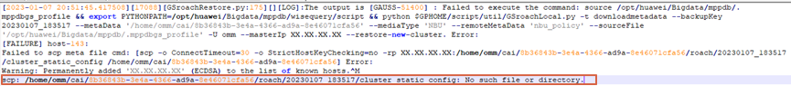

GaussDB(DWS) 8.0.0版本集群副本恢复到新集群，恢复任务失败，任务详情中显示“Roach命令执行失败”。
下发恢复命令的GaussDB(DWS)节点元数据恢复已成功，但将cluster_static_config文件拷贝到其他节点时出错，导致数据恢复失败。
su - 集群用户名
source 环境变量文件路径
cluster_static_config: No such file or directory
示例如下：
